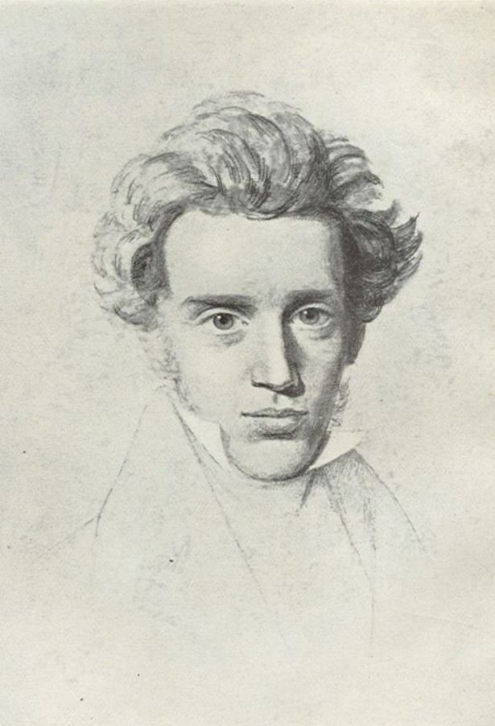
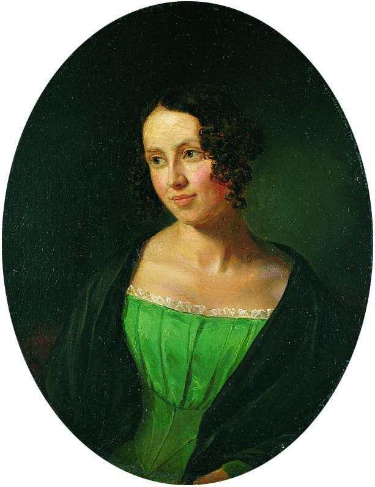
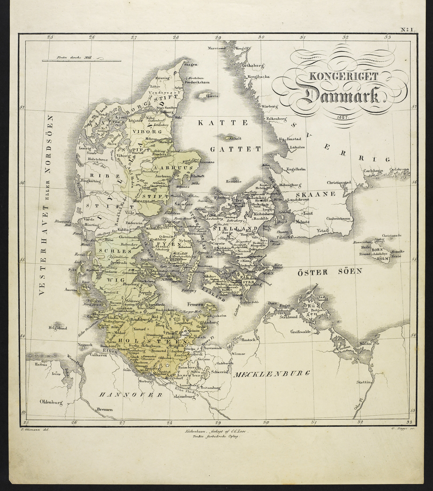
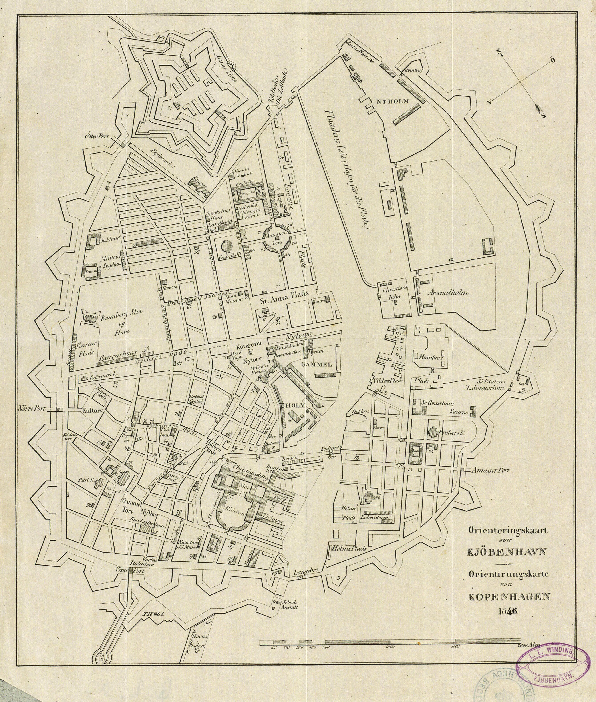
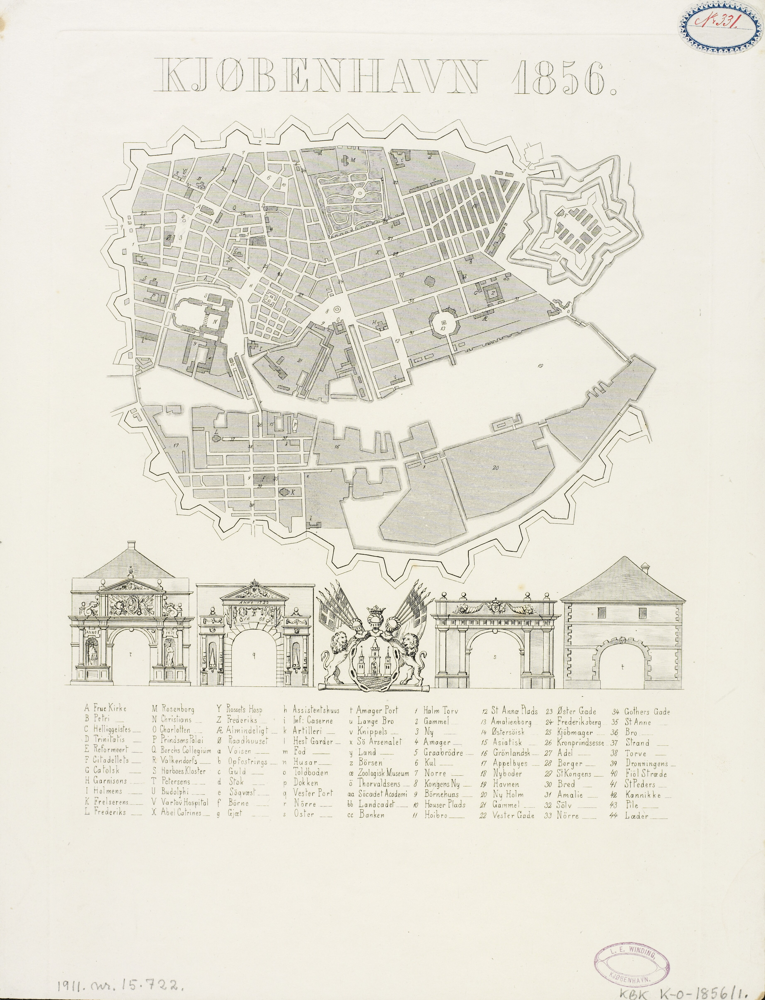

© 2025. All rights reserved.
 Site created with
Hakyll.
Site created with
Hakyll.
Modified theme
lanyon-hakyll
based on
Lanyon.
© 2025. All rights reserved.
 Site created with
Hakyll.
Site created with
Hakyll.
Modified theme
lanyon-hakyll
based on
Lanyon.
Wed, June 24
img/.Introduce Søren Aabye Kierkegaard
Born in family house on Gammeltorv in Copenhagen: May 5, 1813
Danish
Grew up in an extremely strict Christian home
Tumultuous relationship with fiancee, Regine Olsen


Devoted self to writing
Pseudonymous authorship
Denmark

West Jutland
Copenhagen


Thu, June 25